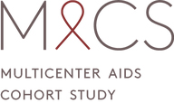
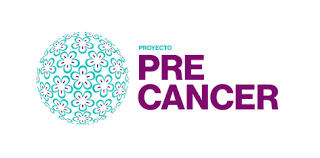
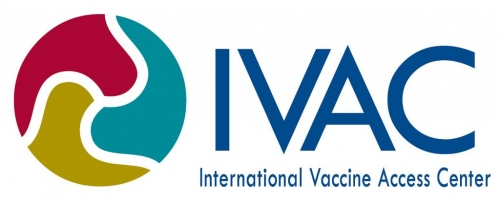

2018
2018Received an Sc.M. in Epidemiology (cancer track) from the Johns Hopkins University Bloomberg School of Public Health

2018 – Present
Biostatistician for the MACS/WIHS Combined Cohort Study
2018
Received an Sc.M. in Epidemiology (cancer track) from the Johns Hopkins University Bloomberg School of Public Health
2018
Teaching Assistant for Spatial Analysis III: Spatial Statistics, offered through the JHSPH Biostatistics Department

2017 – 2018
Applied Epidemiological research into cervical cancer care among women in Peru
2017 – 2018
Data Manager for the Multicenter AIDS Cohort Study (MACS)

2016 – 2017
Data Abstractor for a systematic review of pneumococcal vaccine uptake and efficacy throughout the world, run through the Johns Hopkins University International Vaccine Access Center
2016
Received a B.A. in Biology and Sociology, with Honors in Sociology (Cum Laude) from Bucknell University
2015
Summer internship at the Statens Serum Institut Department of Infectious Disease Epidemiology in Copenhagen, Denmark
2014 – 2016
Biological research into the etiology of White-Nose Syndrome in Myotis lucifugus bats
2012 – 2016
Quantitative Sociological research that primarily focused on Latinx migrants to the United States